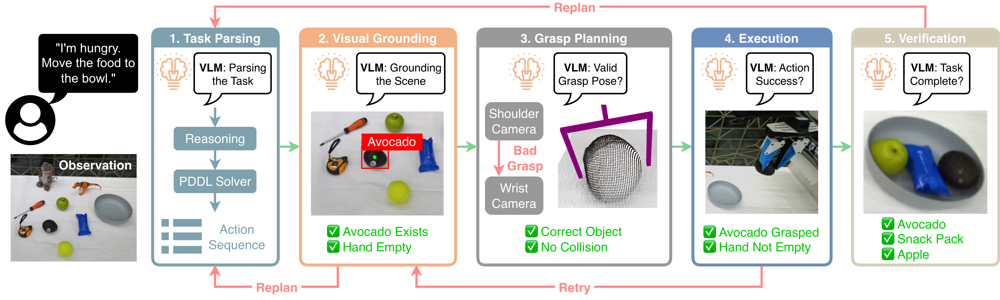

Recent advances in large vision-language models (VLMs) have demonstrated generalizable open-vocabulary perception and reasoning, yet their real-robot manipulation capability remains unclear for long-horizon, closed-loop execution in unstructured, in-the-wild environments. We present AgenticLab, a model-agnostic robot agent platform and benchmark for open-world manipulation. AgenticLab provides a closed-loop agent pipeline for perception, task decomposition, online verification, and replanning.
Using AgenticLab, we benchmark state-of-the-art VLM-based agents on real-robot tasks in unstructured environments. Our benchmark reveals several failure modes that offline vision-language tests fail to capture, including breakdowns in multi-step grounding consistency, object grounding under occlusion and scene changes, and insufficient spatial reasoning for reliable manipulation. We release the full hardware and software stack to support reproducible evaluation and accelerate research on general-purpose robot agents.
AgenticLab demonstrates diverse manipulation capabilities across multiple task categories in unstructured environments.
The agent categorizes objects into designated bins based on semantic attributes, demonstrating open-vocabulary grounding and compositional reasoning.
In-the-wild Kitchen
In-the-wild Lobby
In-the-wild Outdoor
In-the-wild Outdoor
Vertically arranging objects in specified order, requiring precise placement and sequential planning with strong dependencies.
In-the-wild Lobby
In-the-wild Kitchen
In-the-wild Outdoor
In-the-wild Outdoor
Arranging letter blocks to form intersecting words on a grid, combining world knowledge with fine-grained spatial placement.
In-the-wild Kitchen
In-the-wild Lobby
In-the-wild Outdoor
In-the-wild Outdoor
Adjusting object poses to satisfy language-specified orientation constraints, emphasizing spatial understanding beyond 2D placement.
Lab Scene
Lab Scene
In-the-wild Kitchen
In-the-wild Outdoor
Long-horizon rearrangement task placing items into context-appropriate containers, requiring sustained grounding and error recovery.
In-the-wild Lobby
In-the-wild Lobby
In-the-wild Outdoor
In-the-wild Outdoor
AgenticLab executes a closed-loop agentic reasoning pipeline for manipulation that integrates task parsing, grounding, planning, execution, verification, and replanning. The system operates through iterative perception and action cycles, enabling robust performance in unstructured environments.

Click image to view full resolution
The pipeline uses multi-view RGB-D observations for open-vocabulary grounding, VLM-based reasoning for task decomposition and verification, and primitive-based execution with closed-loop feedback. This modular design allows different VLMs to be swapped in through a unified interface, enabling fair evaluation without model-specific engineering.
@article{guo2025agenticlab,
title={AgenticLab: A Real-World Robot Agent Platform that Can See, Think, and Act},
author={Pengyuan Guo and Zhonghao Mai and Zhengtong Xu and Kaidi Zhang and Heng Zhang and Zichen Miao and Arash Ajoudani and Zachary Kingston and Qiang Qiu and Yu She},
year={2025},
journal={arXiv preprint},
}If you have any questions, please contact the AgenticLab team.